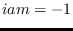

Next: psb_get_mpi_comm Get Up: Parallel environment routines Previous: psb_info Return Contents
call psb_exit(icontxt) call psb_exit(icontxt,close)
This subroutine exits from the PSBLAS parallel virtual machine.
Notes
psb_info has returned with ; indeed, it it is the only
routine that may be called with argument icontxt in this
situation.
close=.true. implies a call
to MPI_Finalize, after which no parallel routine may be called.
close=.false., while on
the last call it should be called with close=.true. to
shutdown in a clean way the entire parallel environment.